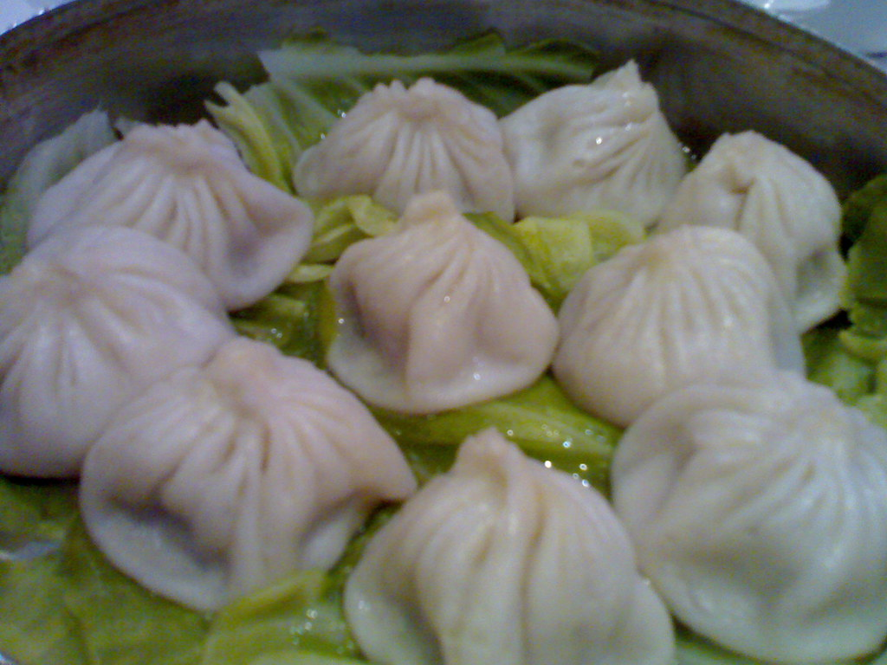

中華酒家 伊藤
土気の夜、静かに灯る一軒。
ホテルで腕を磨いた大将の一皿と、女将の心配りが、いつもの食事を少し特別なものに変えます。あすみが丘東で、本格中華の夜をゆっくりと。
STRENGTH
中華酒家 伊藤が大切にしていること
ホテル仕込みの、確かな腕
大将はホテルで培った技術を礎に、一皿ごとに丁寧な仕事を重ねています。定番の味に頼るのではなく、素材と向き合い、火加減ひとつにもこだわりを持って仕上げる。ご来店のお客様からも「さすがホテルで修行しただけある」と評価をいただいております。
女将のもてなし
どれほど忙しい時間帯でも、柔らかな笑顔を絶やさない。女将の細やかな気配りは、多くのお客様から「ホスピタリティにあふれている」と評判をいただいています。大将自らテーブルで料理をご説明することもあり、店全体で温かくお迎えする空気を大切にしています。
土気で味わう、本格中華
「土気でこんな本格的な中華に出会えるとは」という声を、開店以来多くのお客様からいただいてきました。地域に根づき、長く通っていただけるお店でありたい。そんな思いで、日々の営みを重ねています。
DINNER COURSE
前菜から、デザートまで
ディナーでは、前菜・点心・炒め物・麺飯・デザートと続く一連の流れをお楽しみいただけます。ご来店のお客様からは「どの品も星5の美味しさ」との声もいただいており、序盤から締めくくりまで気の抜けない一皿一皿を心がけております。品目や価格の詳細はお問い合わせください。
VOICE
ご来店のお客様の声
Googleでいただいたクチコミより、個人が特定される情報を除き、文意を損なわない範囲で編集して掲載しています。
前菜、点心、炒め物、麺飯、デザート、コースを通して満足度の高い食事でした。ホテルで修行された大将の腕は伊達ではないと感じます。女将さんの笑顔と気遣いにも温かい気持ちになりました。
エビチリと点心が絶品でした。接客も丁寧で、子ども連れでも安心して利用できます。お車でも行きやすく、また訪れたいお店です。
焼売がふわふわでジューシーで、口に入れた瞬間に旨みが広がりました。女将さんの気配りも細やかで、終始気持ちよく食事を楽しめました。平日の夜でもゴールデンタイムは満席になることがあるそうなので、ご予約してからのご来店がおすすめです。
麻婆豆腐がとても美味しく、焼売やエビマヨも満足度の高い一品でした。飲み放題はないようですが、焼酎のボトルをご用意いただけるとのお声もあり、お酒とあわせて楽しめるお店です。
平日夜のゴールデンタイムは、満席となることがございます。ゆっくりとお食事をお楽しみいただくためにも、事前のご予約をおすすめしております。
お電話でご予約はこちら 043-356-5065ACCESS
あすみが丘東・土気駅エリア
千葉県千葉市緑区あすみが丘東、土気駅エリアにございます。お車でもお越しいただきやすい立地です（詳細な地図・駐車場情報はお問い合わせください）。
PHOTO SAMPLE(フリー素材によるイメージ写真)
